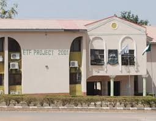
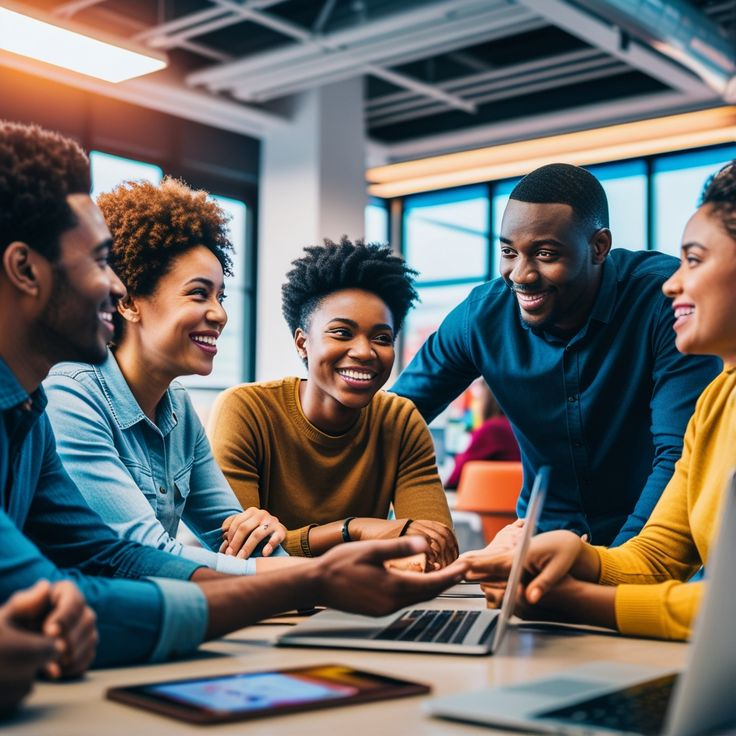

STUDENTS FORUM
The Eaued Education Students Forum is a vibrant space where students from around the world together to discuss real issues,share unique experiences,and build something bigger than themselves.
.jpeg)
Our engage with communities and offer experiences that foster genuine connection,emotional resilience, and authentic human centered interactions.Each experience is carefully chosen to support learners not only in acquiring knowledge and skills but also in developing meaningful relationships and personal well-being.
Join us as we chat about the ups,downs,wavy and zigzags of being a student in today's world.
The Students Life Unplugged podcast is a podcast series where we hear from high school and
university
students across all nation and world to chat about life and studies.This podcast is produced by
Dignity Elites
The Eaued Education Students Forum is a vibrant space where students from around the world together to discuss real issues,share unique experiences,and build something bigger than themselves.

The Eaued Education Engaged Learner Profile is a set of attributes
that is essential to how we thrive in the dynamic interconnected world of today.
We collaborate with writer Dignity Tech and the great developers Dignity Elites
to develop an immersive,interactive Quest tool to explore how you engage with the world based on this profile
In today's rapidly world,the ability to adapt and learn new skills is more important
than ever.We support international efforts to bring 21st century learning skills into our school and
education system.We also encourage the development of these skills among informal learners
We collaborate with educational consultant Dignity Elites to develop a series of lesson
plans for high school teachers and students,based on the 4Cs of 21st century skills,namely Creativity,Critical
Thinking,Communication and Collaboration.

.jpeg)
The learning of language is an essential development for each of us as individuals as well-being
as all of us as a civilisation.Creative writing,as a form of language expression,taps into the depths of our imaginat
ion,our empathy,our connection to ourselves and to people around us.
We believe in the promotion of imaginative reading and creative writing as a core experience for all students.
We collaborate with our teams Dignity Tech on a project called Collaborative Tales where writer
and readers collaborate to build a story in creative and fun ways.Click here for a
descriptive of how it works.Follow the link below to join in.
In this forward thinking project called AI Stories,we explore the power of generative artificial
intelligence (AI) to enhance how we learn through language and imagery.At the heart of our mission is the enchantment
of human values,by exploring the possibilities of how AI enhance the irreplaceable qualities of human capacity,empathy,
and connection.
This initiative sees generative AI as a tool that is more than educational.When used responsibly and in a considered
way,It capacity to highlight and celebrate our humanity by offering us new forms of learning and personal growth in the
digital era.
We collaborate with motion designer and animator Siwes Students to crete a good and great Stories
exploring the interface between humanity and generative AI.
INSIGHTS INTO GLOBAL STUDENTS ONLINE
In this current project called StudentEducation Forum, we embark on a global journey to capture the diverse and vibrant life of students through the lens of social media.Our international team,spread across various cultures and time zones,monitors social platforms to gain insight into the world students are living in online,compare to students experiences from around the world,across cultures and backgrounds. This endeavour is a celebration of the rich tapestry of students life globally.Through this project,we aim to build a deeper understanding and a stronger connection among students worldwide,showcasing the universal yet unique aspect of their journey.


We recognise the future of work as a shift into global workspaces dominated by freelance,remote,and
virtual roles.New oppurtunities enable individuals and organisations to overcome geographical,temporal and cultural
barriers,opening up previously inaccessible human resources and job markets.
However,this shift also brings significant challenges in ensuring fairness,efficiency,accountability,privacy,and
maintaining boundaries.We dedicate ourselves to exploring these issues.Our aims is to prepare young people globally
with the necessary insights and tools to succeed in this dynamic,interconnected landscape,while shaping the future
of work.
We collaborate with All Dignity Siwes Students ,who provides adminstative support and social
media engagement for our programs.For additional insights and to discuss potential collaborative oppurtunities,
please feel free to contact Dignity Elites
Join Eaued Education in Sharing the joy of learning.

@ 2025 Dignity Technology.ng/
Privacy Policy / Community Guidelines
Website design by:
Dignity Elites